Mastering Single Cell RNA-Seq with Dreamlet
Andrea Grioni 2023/10/01
UPDATE 20261111: Added links to related articles on this blog.
Dreamlet: A Powerful Tool for Single Cell RNA-Seq Analysis with Linear Mixed Effect Models
After the talks on single cell sequencing I summarised in my GEMSeq conference notes, I wanted to go hands-on. This tutorial walks through one of the tools that makes large single cell studies with many donors tractable.
Note: This summary is intended for a general audience and may omit some of the more technical details. Please see the original publication for details.
The Problem: Scientists are studying how genes are expressed in individual cells using a method called RNA-sequencing. However, these measurements can vary a lot due to random factors, such as the number of cells looked at or how the genes are read by the machine. So, they need a way to analyze this data in a manner that accounts for these variations.
Weighted Approach: Imagine you’re trying to get an average score for a class based on test results. But some students have taken the test multiple times, while others only once. Instead of treating every score equally, you give more importance (or weight) to scores of students who took the test multiple times, because their average is likely more reliable. Similarly, in this method, scientists give more importance to data that comes from more cells or clearer machine readings.
Two Levels of Adjustments:
- Cell Counts: They first adjust based on how many cells they’ve looked at. Looking at more cells usually gives a clearer picture of gene expression.
- Gene Readings: Next, they adjust based on the quality of machine readings for each gene. They use a popular technique called ‘voom’ to do this.
Refining with Bayes: Lastly, they apply a special statistical trick, called “Empirical Bayes shrinkage”, to refine their results. This is like a teacher adjusting the grades of a class based on how the whole class performed. If everyone did poorly on a question, it might be adjusted to be worth fewer points, benefiting everyone. Similarly, this method “borrows” information from all genes to refine the data.
Why Do All This?: This approach is powerful because it provides clearer insights into gene expression without being thrown off by random factors. Plus, it’s faster and more efficient than some traditional methods, which can struggle with this type of data.
In summary, scientists have a sophisticated method to study gene expression in individual cells, adjusting for various factors to ensure their findings are as accurate as possible!
Resources
Here a list of resource documenting the dreamlet package, which I used
to write this tutorial.
Tutorial Description
Hoffamn et al. performed single nucleus RNA sequencing (snRNA-seq) on postmortem brain samples from the dorsolateral prefrontal cortex (DLPFC) of donors from the Mount Sinai NIH NeuroBioBank. The study incorporated a large dataset of 1.4M nuclei from 586 samples and 299 donors over 60 years of age, with half being Alzheimer’s disease (AD) patients and the other half age-matched neurotypical controls. Analysis revealed 22 distinct cell types, including multiple subtypes of neurons. The dreamlet package was employed to model and analyze expression variance attributable to various factors like technical replicates, age, AD status, and sample pooling. Preliminary findings underscored the need for large sample sizes to discern expression changes associated with AD. The study also emphasized the significance of the batch effect due to sample multiplexing and its potential impact on gene expression variance, highlighting dreamlet’s capability to handle such complexities. A critical observation was the relationship between the number of nuclei per subject and the technical reproducibility of gene expression measurements. The dreamlet package facilitated a detailed understanding of expression differences in Alzheimer’s Disease.
Glossary
linear mixed effect model: A linear mixed-effects model (or mixed model in short) is a linear regression model with fixed effects and random effects. It is useful in several situations, such as when we want to model both fixed and random effects in the same analysis, or when we have nested random effects (e.g., we have both random intercepts and random slopes).
pseudobulk: “Pseudobulk” refers to a method used in single cell RNA-Seq analyses where individual cell transcriptomes are aggregated into groups, often based on cell type or other biological categories. This aggregation effectively creates “virtual” bulk samples from single cell data. The pseudobulk approach aims to increase statistical power by reducing noise and leveraging the strengths of both single cell and bulk RNA-Seq analysis methods. It’s particularly useful for differential expression analyses where individual cell-level resolution might not be necessary and where the increased power from aggregated data can be beneficial.
single nucleus RNA sequencign (snRNA-seq): Single-nucleus RNA sequencing (snRNA-seq) is a method for analyzing the transcriptome of individual cells that have been isolated from tissues. It is similar to single-cell RNA sequencing (scRNA-seq), but instead of isolating individual cells, nuclei are isolated from tissues and analyzed. This allows for the study of cell types that are difficult to isolate, such as neurons in the brain.
Data description
In their study, Hoffman and his team shared a pseudobulk processed version of the dataset saved as an RDS file. To follow along with this tutorial, please download the dataset by clicking on the link: Download Dataset from Synapse. Additionally, if you’re interested in the more extensive raw dataset in the h5ad file format, it’s available at the same link. Instructions for loading and processing this dataset can be found in the authors’ GitHub repository, which you can access here.
Analysis
Load libraries
library(dreamlet)
library(dplyr)
library(gtsummary)
library(ggplot2)
library(tidyr)
library(org.Hs.eg.db)
library(AnnotationDbi)
library(stringr)
library(patchwork)
library(purrr)
library(SingleCellExperiment)
Load data
scRNA_path <- "../data/scRNA/PsychAD_r0_Dec_28_2022_pseudobulk.RDS"
pb <- base::readRDS(scRNA_path)
The analysis will be performed on a subset of the available cell types.
# select cell population of interest.
ctorder <- c('Oligo', 'OPC', 'Astro', 'Micro_PVM', 'CD8_T', 'PC', 'VLMC','Endo')
# filter
assays(pb) <- assays(pb)[ctorder]
Data Exploration
I am using gtsummary to summaryze the data. I am interested in the distribution of the following variables: Sex, Age, and Dx (diagnosis).
df <- colData(pb) |>
as_tibble(rownames = "sampleid") |>
dplyr::select(sampleid, SubID, Dx, sex = Sex, age = Age)
The results are shown below. It will confirm that we will work with 149 control and 150 AD samples. The age and sex distribution are also balanced between the two groups.
df |>
dplyr::select(-sampleid) |>
dplyr::distinct() |>
tbl_summary(
include = c(Dx, sex, age),
by = Dx
) |>
add_p()
| Characteristic | Control, N = 149 | AD, N = 150 | p-value |
|---|---|---|---|
| sex | >0.9 | ||
| Female | 70 (47%) | 71 (47%) | |
| Male | 79 (53%) | 79 (53%) | |
| age | 76 (69, 85) | 78 (72, 85) | 0.2 |
First, create a contingency table and then perform a Chi-squared test. This test aims to ascertain if there’s a notable link between gender (Male/Female) and the treatment group (Control/AD). The null hypothesis posits no association between the two variables, while the alternative hypothesis assumes a connection.
tab <- table(df$sex, df$Dx)
chisq.test(tab)
Pearson's Chi-squared test with Yates' continuity correction
data: tab
X-squared = 2.8825e-05, df = 1, p-value = 0.9957
The chi-squared test’s results suggest no significant relationship between gender and the treatment group in the dataset. The even distribution of individuals in both groups, highlighted by a p-value of 1 and an X-squared value of 0, reinforces this finding.
Second, perform a t-test to determine if there’s a significant difference in age between the two groups. The null hypothesis assumes no difference in age between the two groups, while the alternative hypothesis assumes a difference.
cor.test(df$age, as.numeric(df$Dx))
Pearson's product-moment correlation
data: df$age and as.numeric(df$Dx)
t = 1.696, df = 584, p-value = 0.09042
alternative hypothesis: true correlation is not equal to 0
95 percent confidence interval:
-0.01104875 0.15015365
sample estimates:
cor
0.07000949
The Pearson’s correlation test for the dataset’s age and Dx yielded a coefficient of ~0.0676, indicating a weak positive relationship. However, with a p-value of 0.2436, surpassing the 0.05 significance level, this correlation isn’t statistically significant. The 95% confidence interval (-0.0461 to 0.1797) spanning 0 reinforces this conclusion.
In conclusion, no significant correlation exists between age and Dx. Lastly, it’s essential to detect outliers, as they can significantly influence statistical results.
# Calculate the quartiles
Q1 <- quantile(df$age, 0.25)
Q3 <- quantile(df$age, 0.75)
# Compute the Interquartile Range (IQR)
IQR <- Q3 - Q1
# Detect outliers
outliers <- df$age[(df$age < (Q1 - 1.5 * IQR)) | (df$age > (Q3 + 1.5 * IQR))]
# Print the detected outliers
print(outliers)
numeric(0)
Fortunately, no outliers were detected in the dataset. Finally, I would like to save the samples ID of Control and AD groups in two separate vectors.
# Control group
control <- df |> dplyr::filter(Dx == "Control") |> dplyr::pull(sampleid)
# AD group
ad <- df |> dplyr::filter(Dx != "Control") |> dplyr::pull(sampleid)
In conclusion, the dataset is balanced between the control and AD groups in terms of age and sex distribution.
Quality Control and Preprocessing
First we extract the read counts for each Channel/celltype from the
SingleCellExperiment object. Then we combine them into one data.frame
and make celltype a factor. This will help us to order the violin plots.
# Extract read counts for each Channel/celltype
df_counts <- map_dfr(ctorder, function(x) {
data <- assay(pb, x)
data.frame(
celltype = x,
ID = colnames(data),
readCounts = Matrix::colSums(data)
)
})
# Convert celltype to a factor with the specified order
df_counts$celltype <- factor(df_counts$celltype, levels = ctorder)
Removing cells with 0 reads.
df_counts <- df_counts[df_counts$readCounts > 0, ]
Generate violin plot to visualize the distribution of reads count for each CellType.
# Generate violin plot to visualize the distribution of read counts for each cell type
ggplot(df_counts, aes(x = celltype, y = readCounts, fill = celltype)) +
# Violin plot
geom_violin() +
# Boxplot inside violin
geom_boxplot(width = 0.1, outlier.size = 0.1) +
# Theme and aesthetics
theme_bw() +
theme(
aspect.ratio = 1,
plot.title = element_text(hjust = 0.5),
legend.position = "none",
axis.title.y = element_blank()
) +
# Log scale for y-axis
scale_y_log10() +
# Horizontal layout
coord_flip() +
# Labels and title
labs(
y = "Number of reads observed for each CellType",
x = NULL,
title = 'Reads per cell cluster for each CellType'
)
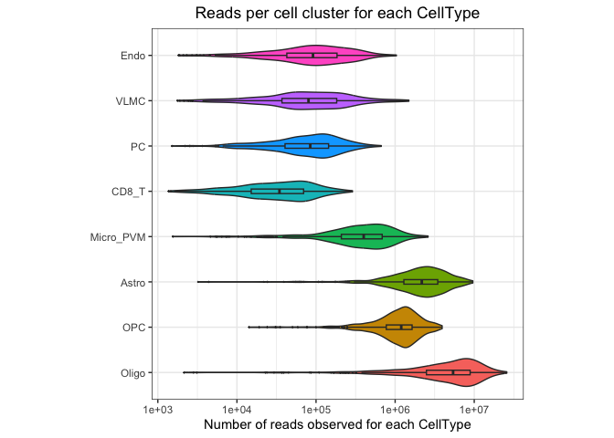
Show the normalized reads for cell ratio.
# Convert cell counts to dataframe and pivot to longer format
df_rate <- cellCounts(pb) |>
as_tibble(rownames = "ID") |>
tidyr::pivot_longer(cols = -ID, values_to = "ncells", names_to = "celltype") |>
dplyr::mutate(celltype = factor(celltype, ctorder))
# Join dataframes and compute normalized reads
df_joined <- df_counts |>
dplyr::inner_join(df_rate, by = c("celltype", "ID")) |>
dplyr::mutate(normalizedReads = readCounts/ncells)
Generate the violing plot.
# Create a violin plot to visualize the normalized read counts for each 'celltype'
df_joined |>
ggplot(aes(celltype, normalizedReads, fill = celltype)) +
# Display distribution of normalized read counts using a violin plot
geom_violin(color = NA) +
# Add a boxplot inside the violin plot for a summarized view
geom_boxplot(width = 0.1, outlier.size = 0.1) +
# Use the classic theme for a polished appearance
theme_classic() +
# Adjust theme settings for optimal visualization
theme(
aspect.ratio = 1,
plot.title = element_text(hjust = 0.5),
legend.position = "none"
) +
# Apply a log scale to the y-axis for better data representation
scale_y_log10() +
# Present the plot horizontally for clarity
coord_flip() +
# Define labels for the plot
labs(
y = 'Normalized Reads (Reads per cell)',
x = NULL,
title = 'Normalized Reads per Cell for Each Channel'
)
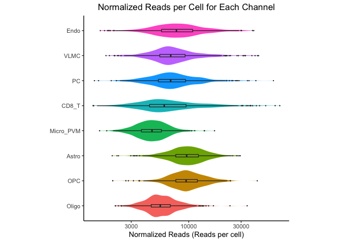
Evaluate the specificity of each gene for each cell type. The function calculates the proportion of each gene’s expression that is specific to individual cell types, retaining only highly expressed genes:
df <- cellTypeSpecificity( pb )
plotViolin(df, assays=ctorder)
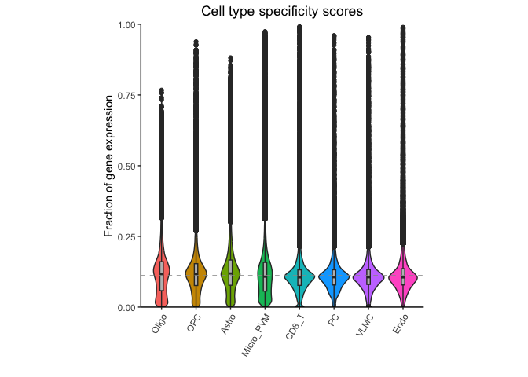
Create a tibble with columns gene, totalCPM, cellType, and CPM count. Then, group by celltype and calculate the percentage of each gene’s expression that is specific to individual cell types. Finally, sort the data by totalCPM in descending order and sample the top 3 genes.
# Process the 'df' dataframe to extract top marker genes for each cell type
my_markers <- df |>
# Convert the dataframe to a tibble and assign row names to 'gene' column
tibble::as_tibble(rownames = "gene") |>
# Exclude rows with 'gene' values containing the pattern "ENSG"
dplyr::filter(!str_detect(gene, "ENSG")) |>
# Transform the dataframe to a long format, with 'cellType' and 'CPM' columns
tidyr::pivot_longer(
cols = !c(gene, totalCPM),
names_to = "cellType",
values_to = "CPM"
) |>
# Compute the percentage of CPM for each gene relative to 'totalCPM'
dplyr::mutate(percentCPM = CPM / totalCPM * 100) |>
# Organize data by 'cellType' and order within each group by 'percentCPM'
dplyr::group_by(cellType) |>
dplyr::arrange(desc(percentCPM)) |>
# Retain only the top 3 genes for each cell type
dplyr::slice(1:3) |>
# Keep only the 'cellType' and 'gene' columns
dplyr::select(cellType, gene) |>
# Eliminate any repeated rows
dplyr::distinct() |>
# Convert the tibble to a named vector with 'cellType' as names and 'gene' as values
tibble::deframe()
Use extracted cell markers from my_markers and represent them with
barplots.
# Use the 'select' function from the AnnotationDbi package to map ENSEMBL IDs to gene SYMBOLs
df_genes <- AnnotationDbi::select(
org.Hs.eg.db,
keys = my_markers,
columns = "ENSEMBL",
keytype = "SYMBOL"
)
'select()' returned many:1 mapping between keys and columns
# Filter the 'df' dataframe to retain only the rows corresponding to the ENSEMBL IDs in 'df_genes'
df_sub <- df[rownames(df) %in% df_genes$ENSEMBL, ]
# Match the row names of 'df_sub' with the ENSEMBL IDs in 'df_genes' and replace them with corresponding gene SYMBOLs
idx <- match(rownames(df_sub), df_genes$ENSEMBL)
rownames(df_sub) <- df_genes$SYMBOL[idx]
# Plot percent bars for the specified genes and assays
plotPercentBars(df, genes = unique(my_markers), assays = ctorder)
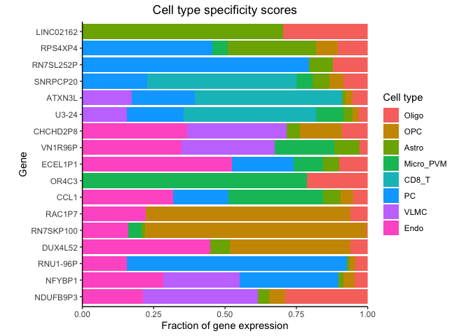
The Dreamlet package provides a function to generate heatmap from a
selected list of genes.
dreamlet::plotHeatmap(
df,
genes=unique(my_markers),
assays=ctorder)
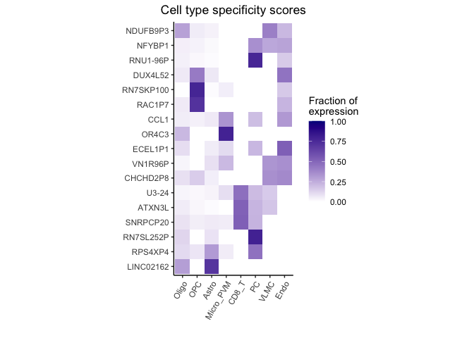
Modelling
In this tutorial, we’ll walk you through the process of transforming raw
gene expression data to log2 Counts Per Million (CPM) and then applying
“voom” precision weights. Voom, a method from the limma package, is
crucial for RNA-Seq data analysis as it estimates the mean-variance
relationship of log-counts and computes precision weights for each
observation.
Step 1: Define the Model for Normalization
The normalization process is a crucial step in preparing data for downstream analyses, especially in genomics. We aim to adjust for various factors that might influence gene expression readings, ensuring the results we observe later are due to our conditions of interest and not confounded by other variables.
# Create a formula for normalization
form = ~ (1|SubID) + (1|poolID) + Sex + scale(Age) + Dx
Here’s what each component of the formula represents:
(1|SubID): This introduces a random effect for each individual subject or sample (SubID). When you incorporate random effects, it means you’re accounting for inherent variability between different subjects, but not necessarily estimating the effect of each specific subject. This is particularly useful if you believe each subject has its unique baseline characteristics that might influence gene expression but are not of primary interest.
(1|poolID): Similar to SubID, this term introduces a random effect, but for each batch or pool (poolID). In many genomics experiments, samples are processed in batches, and each batch could introduce its variability due to technical nuances. By adjusting for this, we ensure that batch effects don’t confound our results.
Sex: This is a fixed effect for the sex of the subjects. Fixed effects are factors for which we explicitly estimate and test their impact on the outcome. By including Sex, we’re saying that the gender of the subjects might influence gene expression, and we want to adjust for any differences that arise due to gender.
scale(Age): This term also represents a fixed effect, but for the age of the subjects. Age values are scaled (standardized) here, which means each age value is subtracted from the mean age and then divided by the standard deviation of age. This standardization ensures that the age variable is on a similar scale as other predictors in the model. It helps in stabilizing the model and makes interpretations more straightforward.
Dx: This introduces another fixed effect for the diagnosis (Dx). By incorporating this term, we’re accounting for potential differences in gene expression that arise due to various diagnoses. We’re explicitly interested in testing and estimating the impact of different diagnoses on gene expression.
In summary, this formula provides a comprehensive framework for normalization, taking into account subject variability, batch effects, and other important factors like age, sex, and diagnosis. By using this formula, we’re ensuring a robust normalization that paves the way for more reliable downstream analyses.
# Normalize and apply voom
res.proc <- processAssays(pb, form)
Voom stands for Variance modeling at the observational level. Voom is a method within the limma package designed for RNA-sequencing (RNA-seq) data analysis. It addresses the challenge of RNA-seq data being count-based and having a mean-variance relationship. In essence, voom:
- Transforms RNA-seq counts to log2-counts per million (logCPM), making the data more continuous.
- Estimates the mean-variance relationship inherent in RNA-seq data.
- Calculates weights for each observation based on this relationship.
- Uses these weights in linear modeling to identify differentially expressed genes.
Below I will show the voom plot for each cell type. It will show that low expressed genes have an higher variance in almost all cell types.
plotVoom(
res.proc,
ncol=4,
assays=ctorder
) +
theme_classic()
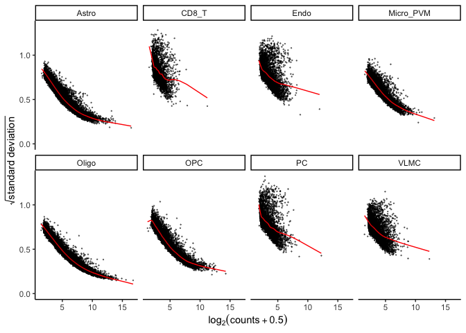
Step 3: Variance Partitioning Analysis
The variance partitioning analysis provides a tools to assess quality
control of the experiment and to identify the main sources of variation.
The function fitVarPart fits a linear mixed model to the data and
estimates the variance components for each random effect. The function
plotVarPart plots the variance components for each random effect. The
function plotPercentBars plots the percent of variance explained by
each random effect for each gene. The function plotGeneHeatmap plots
the heatmap of the percent of variance explained by each random effect
for each gene. The function plotForest plots the forest plot of the
percent of variance explained by each random effect for each gene.
# define formula
form <- ~ (1|SubID) + (1|poolID) + Sex + scale(Age) + Dx
# run model
res.vp <- fitVarPart(res.proc, form)
The variance partition plots represent the contribution to the total variation for each cell type. In this plot, we can see that most of the variation is originitated by the SubID and poolID. The Dx (diagnosis) and Age are the least important factors.
plotVarPart(
sortCols(res.vp),
label.angle=45,
ncol=4,
assays=ctorder
)
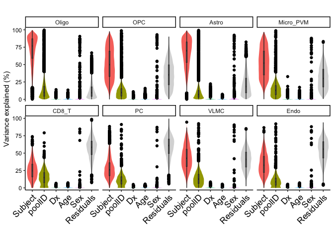
The same plot can be generated at gene level. In this case, we can see that the gene KCNMA1 variance originates by the SUBJID, while the gene XIST has a higher variance due to the SEX covariate. CECR2 and PTPRG have a higher variance due to the SUBJID covariate, but there is also significant contribution from the diagnosis of the subject.
# Define a list of genes of interest
genes <- c("KCNMA1", "CECR2", "PTPRG", "NXPE1", "XIST", "NDUFB6")
# Filter the 'res.vp' dataframe to retain only the rows corresponding to the genes of interest and the assay 'Micro_PVM'
#df.vp.sub <- res.vp[(res.vp$gene %in% genes) & (res.vp$assay == "Micro_PVM"), ]
df.vp.sub <- res.vp[(res.vp$gene %in% genes), ]
# Reorder the 'gene' factor levels based on the predefined 'genes' list and sort the dataframe by this order
df.vp.sub$gene <- factor(df.vp.sub$gene, levels = rev(genes))
df.vp.sub <- df.vp.sub[order(df.vp.sub$gene, decreasing = TRUE), ]
# Define a color palette for the plot
col <- c(RColorBrewer::brewer.pal(ncol(df.vp.sub) - 3, "Set1"), "grey85")
# Create a percent bar plot using the filtered data and the specified color palette
fig.percent <- plotPercentBars(df.vp.sub, assays = ctorder, col = col, ncol=5) +
theme(aspect.ratio = 1)
# display figures
fig.percent
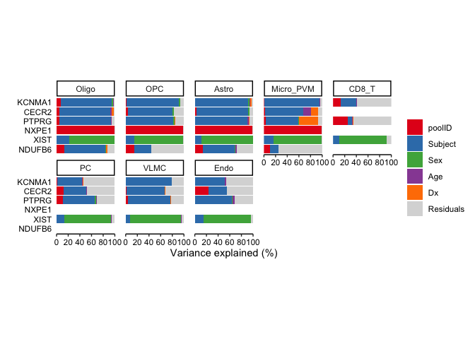
One of the main advantages of the dreamlet package is the ability to model batch effects and visualize it. Here an example of how batch effects contribute to the variation of the gene expression for each cell type.
# Visualize the distribution of variance explained by 'poolID' for each assay using a violin plot
res.vp |>
# Convert the data to a tibble format
as_tibble() |>
# Reorder the 'assay' factor levels based on the predefined 'ctorder' list
mutate(assay = factor(assay, levels = ctorder)) |>
# Plot the data
ggplot(aes(x = 100 * poolID, y = assay)) +
# Add a violin plot to visualize the distribution
geom_violin(fill = "#984EA3", scale = "area") +
# Overlay a boxplot for a summarized view
geom_boxplot(width = 0.1, outlier.color = "#984EA3") +
# Use the classic theme for a polished appearance
theme_classic() +
# Adjust theme settings for optimal visualization
theme(
aspect.ratio = 1,
plot.title = element_text(hjust = 0.5)
) +
# Define labels for the plot
labs(
x = "Variance explained (%)",
y = NULL,
title = "10X pool"
)
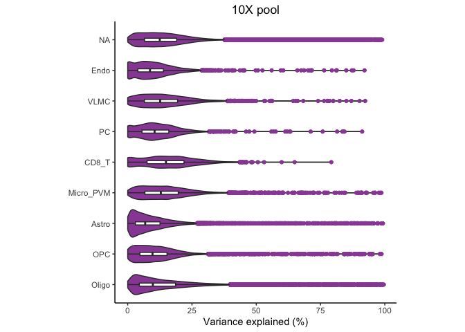
Differential expression: dreamlet analysis
The dreamlet package offers a sophisticated approach tailored for single-cell and single-nucleus RNA-sequencing data. It not only identifies differentially expressed genes but also accounts for various technical and biological factors that can influence gene expression measurements. By modeling and analyzing expression variance attributable to factors like technical replicates, age, disease status, and sample pooling, dreamlet provides a more comprehensive view of the transcriptomic landscape.
In this example, we are interested in comparing the control and disease groups to identify differentially expressed genes for each cell type. The model will include SUBJID and poolID as random effect. We considered sex and age as a fixed effect.
form = ~ (1|SubID) + (1|poolID) + Sex + scale(Age) + Dx
fit = dreamlet( res.proc, form)
Volcano
Generate volcano plot for each cell type. The plotVolcano function uses
defalt paramenters threshold = 0.005 and l2fc = 2.
plotVolcano(fit, "Dx", ncol=5, assays=ctorder) + theme_classic()
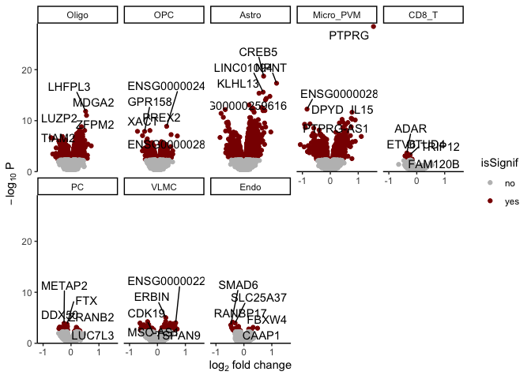
Highlight genes
Cell type gene markers can be provided to easily generate an heatmap.
genes <- c("DUSP10", "PTPRG", 'NPNT', 'DPYD', "VGF", 'SPRY4-AS1', "PDE10A", "NCAM2", 'PCDH7')
fig.gene_heatmap <- plotGeneHeatmap( fit, coef="Dx", genes=genes, assays=ctorder)
fig.gene_heatmap
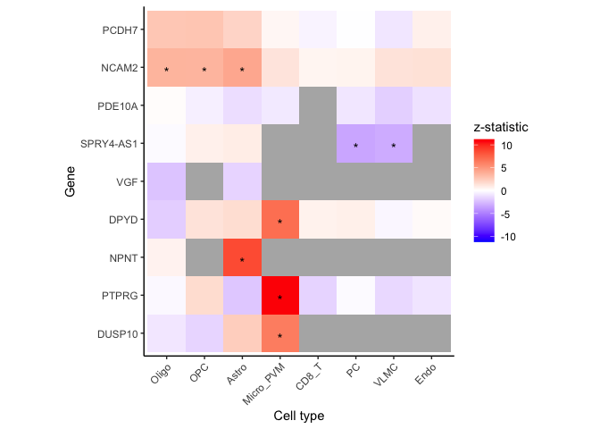
A forest plot can be generated to identify the fold change variation for selected genes across the cell populations.
# Create a list of forest plots for each gene of interest
figList <- lapply(genes, function(g) {
plotForest(fit, coef = 'Dx', gene = g, assays = ctorder) +
# Adjust the plot's appearance for optimal visualization
theme(
aspect.ratio = 1,
legend.position = "none"
)
})
# Assign gene names to the list of plots for easy identification
names(figList) <- genes
# Arrange the individual plots in a grid layout with 2 columns
wrap_plots(figList, ncol = 3)
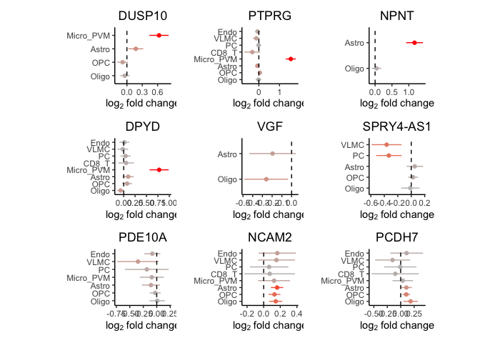
It is also possible to visualize the distribution of the gene expression for each cell type between our control and AD groups.
# Define a named vector associating genes with their respective cell types
gene_CT <- c(
"PTPRG" = "Micro_PVM",
'NPNT' = "Astro",
'DPYD' = "Micro_PVM"
)
# Create a list of boxplots for each gene, showcasing their expression in different conditions
figList <- lapply(names(gene_CT), function(g) {
# Extract relevant data for the current gene and its associated cell type
df <- extractData(res.proc, gene_CT[g])
df <- df[, c('Dx', g)]
# Recode the 'Dx' column for better readability in plots
df$Dx <- factor(
df$Dx,
levels = c(0, 1),
labels = c("Control", "AD")
)
# Rename the gene column to a generic name for easier plotting
colnames(df)[colnames(df) == g] <- "expr"
# Create a boxplot for the current gene's expression across conditions
ggplot(df, aes(Dx, expr, fill = Dx)) +
geom_boxplot() +
theme_classic() +
theme(
aspect.ratio = 1,
plot.title = element_text(hjust = 0.5),
legend.position = "none"
) +
labs(
title = paste0(gene_CT[g], ": ", g),
y = expression(log[2]~CPM),
x = NULL
) +
scale_fill_manual(values = c("grey50", "red3"))
})
# Assign gene names to the list of plots for easy identification
names(figList) <- names(gene_CT)
# Arrange the individual plots in a grid layout with 3 columns
wrap_plots(figList, ncol = 3)
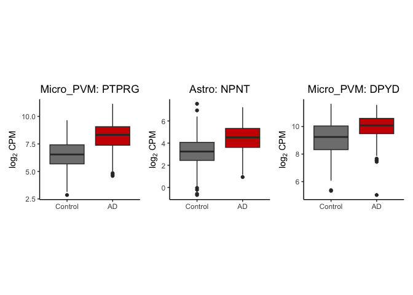
Conclusion
Throughout this tutorial, we’ve embarked on an introduction into single cell RNA-Seq analysis, specifically leveraging the capabilities of the Dreamlet package. We’ve seen firsthand how Dreamlet effectively models batch effects, ensuring that our data remains uncompromised by unwanted technical variations. This approach is useful when dealing with biological and technical replicates that we want to take into account for our analysis. Moreover, by pinpointing the exact sources of variation for each cell type and gene of interest, we’ve gained a nuanced understanding that goes beyond traditional analysis methods. Finally, we’ve seen how Dreamlet can be used to identify differentially expressed genes, accounting for various factors that might influence gene expression measurements. This approach is powerful because it provides clearer insights into gene expression without being thrown off by random factors. Plus, it’s faster and more efficient than some traditional methods, which can struggle with this type of data.
Author Notes
In this article, I’ve offered a glimpse into the projects I’ve engaged with at Novartis Biomedical Research. While the insights shared are rooted in scientific studies and open datasets available to the public, it’s crucial to note that they are utilized here purely as illustrative examples and are not directly affiliated with Novartis Biomedical Research. Your feedback and comments are highly valued. For additional information or to connect with me, please visit my personal page.